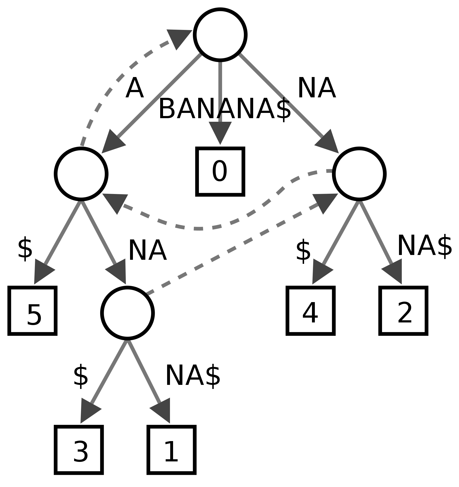

jendeley v2 - インクリメンタルな曖昧検索の実装
jendeleyという JSON ベースの文書管理ソフトウェアを作って日々使っています。先日、バージョン 2 にアップデートするに当たって、長らく欲しかった文書全体に対するインクリメンタルな曖昧検索機能を実装しました。
目次
jendeley とは
まずはじめに jendeley を簡単に紹介します。jendeley とは僕が作っている文書管理ソフトウェアです。npm i @a_kawashiro/jendeleyでインストールできます。
- データベースを人間に可読な JSON で保持すること
- サーバではなくローカルの PC で動作すること
- node.js とブラウザが動く環境なら OS を問わず動作すること
の 3 つの原則のもとに開発しています。半年ほど前の 2022 年 11 月に開発を開始し、先日 v2.0 をリリースしました。2022 年 1 月にリリースした jendeley v1.0 はタイトル、著者、ユーザの付与したタグ、ユーザの書いたコメントに対してキーワードで文書を絞り込むことができました。しかし文書の中身に対して検索を行うことはできませんでした。
僕は昔から検索エンジンを自作することに興味があることもあり、jendeley に全文検索を実装したいと思っていました。更に、常日頃からfzfというファジー検索ツールを常用しているので、検索機能を実装するならインクリメンタルな曖昧検索を実装したいと考えていました。
インクリメンタルな曖昧検索
インクリメンタルな曖昧検索とは
「インクリメンタルな曖昧検索」とは、文字を一文字打つごとに新たに検索が行われ、また入力したキーワードに完全に一致しなくてもマッチするような検索のことです。fzfは CLI で動作するインクリメンタルな曖昧検索ツールであり、シェルに組み込んで履歴の検索を行ったり、エディタ に組み込んでカレントディレクトリ以下のソースコードを検索することができます。

上の動画はsoldのソースコードを fzf を使って全文検索している様子です。曖昧検索なので完全に一致していない行もマッチしています。また、インクリメンタルな検索なので、一文字入力するごとに検索結果が更新されています。
このインクリメンタルな曖昧検索は非常に便利で、僕はファイル検索、キーワード検索、コマンドの履歴を検索するショートカットを登録し、利用しています。
jendeley のインクリメンタルな曖昧検索機能
jendeley は v2.0.0 でインクリメンタルな曖昧検索を実装しました。登録した文書の本文、タイトル、著者全てに対してインクリメンタルな曖昧検索を行うことができます。下の動画は実際にインクリメンタルな曖昧検索を行っている様子です。”Type theory”という検索クエリで検索しており、1 文字打つごとに全文検索の結果が変わっています。また、マッチした部分を太文字で表示し、その周囲も表示します。このため、文書の中でその検索クエリがどのような文脈で使われているかが瞬時にわかります。

jendeley のインクリメンタルな曖昧検索の実装
求められる性能
実装について説明する前に jendeley のインクリメンタルな曖昧検索に求められる性能を説明します。
まず、検索対象となる文字列のサイズです。現在、僕の jendeley のデータベースのサイズは 117MiByte あり、その大部分が登録した文書の本文です。Python の簡単なスクリプトで集計したところ $ 1.0 \times 10^8 $ 文字ありました。
$ ls -alh jendeley_db.json
-rw-r--r-- 1 akira akira 117M 5月 26 21:47 jendeley_db.json
次に応答時間です。今回は 100ms 以内に応答を返すことを目標に設定しました。この値には特に根拠がありません。この程度であればリアルタイムに見えるだろう考えたので、このように設定しました。
ナイーブな実装
fzf で使われている検索アルゴリズムはfzf のスコア計算を読んでみるで解説されています。このアルゴリズムは動的計画法を使ってスコアを計算し、文書の長さ$n$、クエリの長さ$k$のとき$O(nk)$で動作します。
このアルゴリズムを実装し、実際に jendeley で使ってみたところ、応答に 1 秒以上かかることがありました。これではインクリメンタルな検索とは言い難いです。動的計画法のテーブルを部分的に構築するなどの工夫もしてみたのですが、一文字打つごとに$O(n)$の計算量がかかることが致命的で、小手先の改善ではインクリメンタルな検索は実現できないと判断しました。
接尾辞木を用いた実装
jendeley のインクリメンタルな曖昧検索には検索する対象の文字列が変化しない、という特徴があります。この特徴を活かして高速に文字列検索を実現するアルゴリズムに接尾辞木を用いた文字列検索があります。
接尾辞木とは
接尾辞木とは与えられた文字列の接尾部を木構造で表すデータ構造です。例えば”BANANA”という文字列の接尾辞木は以下の図のようになります。一度、検索対象の文字列の接尾辞木を構築すれば、検索対象の文字列に対する検索は木の根からクエリに沿って木をたどっていくだけで実現でき、クエリの長さ$k$のとき$O(k)$で実装できます。なお、曖昧検索は木をたどるときに一致しない文字を見つけたら読み飛ばすように工夫をすれば実現できます。
ただし、検索対象の文字列の長さが$n$のとき、接尾辞の数は$n$個、接尾辞の長さは$O(n)$です。このため、ナイーブに接尾辞木を構築した場合、$O(n^2)$の時間がかかります。これでは 求められる性能で述べた $n=1.0 \times 10^8$ のとき現実的な時間での構築が不可能です。

https://ja.wikipedia.org/wiki/接尾辞木より
Ukkonen のアルゴリズムを用いた接尾辞木の構築
ところが、接尾辞木を$O(n)$で構築するアルゴリズムが存在します。Ukkonen のアルゴリズムです。詳細は省略しますが、Ukkonen のアルゴリズムを使えば接尾辞木を $O(n)$で構築することができます。jendeley での実装は jendeley-backend/src/suffix_patricia_tree.tsにあります。
接尾辞木は文書ごとに構築します。構築のタイミングは最初にその文書が全文検索の対象になったときです。一度構築した接尾辞木はキャッシュされます。
実装に際しては以下の記事が大変参考になりました。特に 1 つ目の Stack Overflow の記事は構築の過程が丁寧に説明されており、アルゴリズムの挙動を把握する上で非常に役立ちました。
- Ukkonen’s suffix tree algorithm in plain English
- Ukkonen’s Suffix Tree Construction – Part 1
- Ukkonen’s algorithm - Wikipedia
接尾辞木を用いた実装の性能
下の画像は jendeley で”Type theory”と検索しているときのログです。Ukkonen のアルゴリズムで接尾辞木を構築することで 3820ms で接尾辞木の構築が完了し、その後の検索クエリに 67ms から 130ms で応答できていることがわかります。

まとめ
jendeley では v2.0 のリリースにあたって、登録した全ての文書を対象とするインクリメンタルファジー検索を実装しました。この検索を高速に行うため、接尾辞木を Ukkonen のアルゴリズムを用いて構築しました。
謝辞
事前に原稿を読んでコメントをくださった、gky360さん、Shuhei Kadowakiさん、パセリなずなさん、ありがとうございました。
お願い
Github の jendeley のリポジトリにスターしてください。
連絡先
この記事に誤りがあった場合はTwitter等で連絡をください。修正します。その他の連絡先は https://akawashiro.github.io/ にあります。
参考文献
- 検索エンジンを自作する夢 未踏プロジェクトで検索エンジンを作っていたときの反省文書です。
- fzf 日々使っている曖昧検索ツールです。
- fzf のスコア計算を読んでみる fzf が検索クエリに対してどのようにスコアを計算しているかが解説されています。
- https://ja.wikipedia.org/wiki/接尾辞木
- Ukkonen’s suffix tree algorithm in plain English Ukkonen のアルゴリズムの挙動を把握するときに役立つ記事です。
- Ukkonen’s Suffix Tree Construction – Part 1 Ukkonen のアルゴリズムの実装に際しては Stack Overflow のものよりも役立つかもしれません。
- Ukkonen’s algorithm - Wikipedia Ukkonen のアルゴリズムの概略を把握するのに良いです。